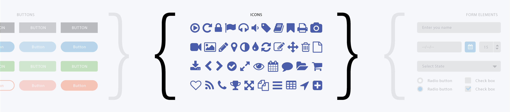

Color swatches or typography chart can be generated automatically directly from you variables files. Just group them with the comments and you are done.
Living Styleguide Made Easy
npm install devbridge-styleguide --save-dev
|
01.
Transform your variables into elegant styles
Aa
a b c d e f g h i j k l m n o p q r s t u v w x y z
A B C D E F G H I J K L M N O P Q R S T U V W X Y Z
1 2 3 4 5 6 7 8 9 0
$color-yellow: #ffa960;
$color-yellow-110: #de883f;
color-sky-d10: #538292;
$color-sky: #70b1c7;
//-- typo:start --//
$font-avenir: 'Avenir W01', sans-serif;
$font-chaparral: 'Chaparral W01', serif;
//-- typo:end --// $src-icon-down: 'images/icon-down.svg';
$weight-black: 900;
$weight-heavy: 800;
$weight-bold: 700;#F8533B
#FDA400
#205B67
($gutter / 2);
$footer-height: 200px;//-- color:start --//
$color-red: #f8533b;
$color-yellow: #fda400;
$color-blue: #205b67;
$color-blue-120: #00a5bc;
$color-green: #95bf15;
//-- color:end --// $body-font:font-chaparral;
$heading-font: $font-avenir;
$src-icon-down: 'images/icon-down.svg';
02.
Live edits in the browser
Edit snippets, organize categories, update styles, everything can be done directly in the browser.
1920px
Code: *
<div class="button-wrapper">
<button type="button" class="btn">Save</button>
<button type="button" class="btn-secondary">Save as draft</button>
<button type="button" class="btn-link">Cancel</button>
</div>
Custom CSS: *
.wrapper {
}
03.
Organize snippets into the categories

Required node.js
Installation
We choose Node.js and developed the tool as npm package, because node packages can be easily integrated with existing front-end workflows. Also integration with Gulp is essential if we want to include styleguide automatization in front-end developers workflow.
-
Install local package to your project directory
npm install devbridge-styleguide --save-dev |
-
Create Gulp task
var styleguide = require('devbridge-styleguide'); gulp.task('start-styleguide', function () { styleguide.startServer(); }); -
Start styleguide server
gulp start-styleguide |